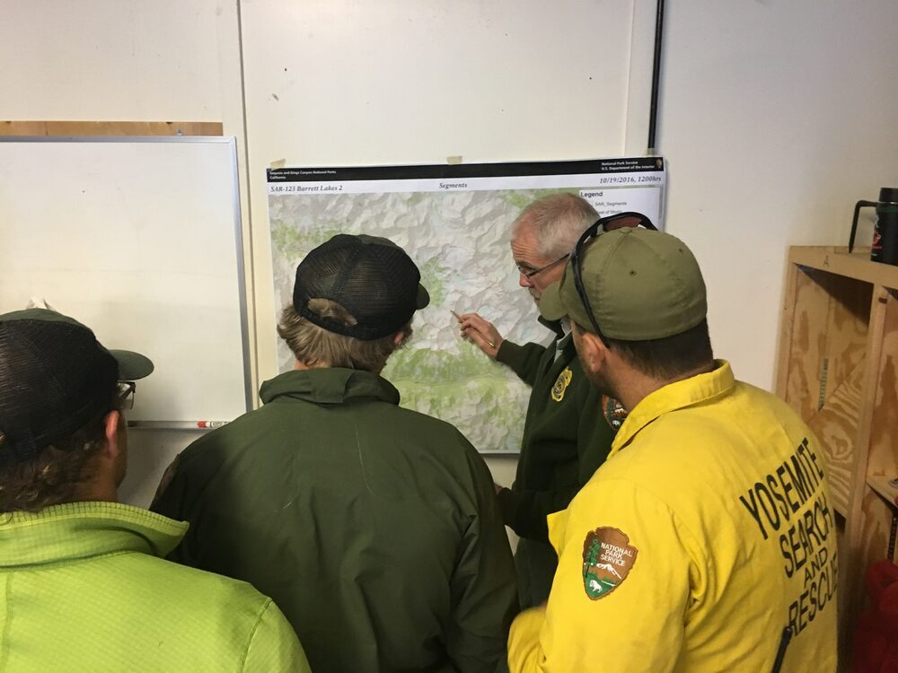
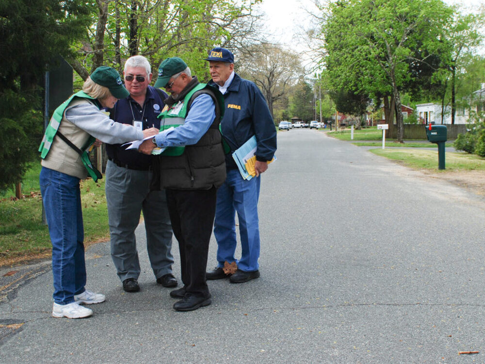
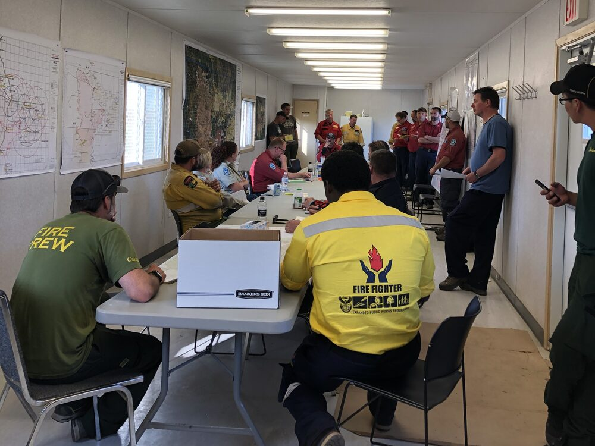
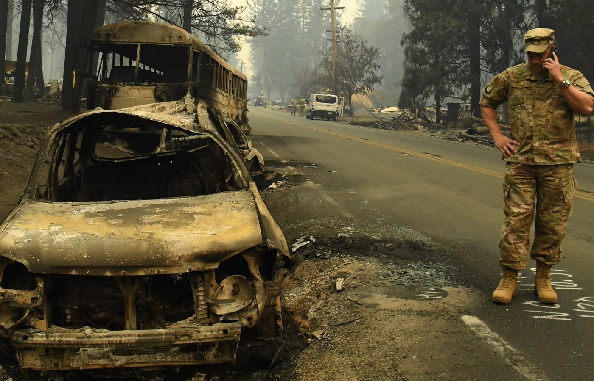

What RangerTrak does
The detail behind the home page: what it does, who it's built for, and the gaps it doesn't hide. New to it? The RangerTrak Tour Guide walks you through the app itself, one hands-on module at a time.

What it does

RangerTrak runs in the browser. There is no server, no account and no login. Your mission stays on your device. When online, the app fetches map images and looks up addresses for report locations (privacy). Each browser keeps its own copy, and copies don’t sync: see one copy per browser. That copy is sturdy: once installed, the laptop or phone can be shut down, restarted, or updated to the latest version of RangerTrak, and the mission is still there when you open it again. Only clearing the browser’s site data, or working in a private window, loses it.
This page is a tour for new users as much as a list. Many of these are easy to miss just looking at the screen, so it’s worth a read before your first drill.
A new install opens in Easy menus: the everyday workflow, and nothing else until your mission needs it. That’s what this page covers. The extras, such as tactical call signs, photos, field phones and the printed map sheet, are in Full menus, one button away in the app.

Before the mission
Five minutes on a connection, at home or at a meeting, decides whether RangerTrak works when the network goes.
Install it before you head out
Open rangertrak.org once and install it, like any app. From then on it runs with no Internet at all. A device that has never loaded it gets nothing in the field.
The readiness dot
A colored dot at the top of every page checks six things: mission named, a real roster loaded, operational period current, map tiles saved, the alternative map downloaded, storage protected. Hover or tap it to see what’s missing; each item links to the fix. It never stops you working.
Mission and operational period
Name the mission and set the operational period on the Mission page. Both appear in the header and on every printed ICS form, with the time elapsed and left in the period. Set a default location near your area and every new report starts from there. Changes save as you make them.
Roster
List individuals or teams, with photos, phone numbers and call signs. No amateur license? Give them a tactical call sign, or leave it blank and RangerTrak uses their name. Photos load in bulk, matched by file name to each ranger’s ID or call sign.
Start from the Excel or CSV list you already keep. RangerTrak guesses which column is which and lets you correct it, then shows who it will add and update before it changes anything. An import only adds and updates: nobody is deleted, and a blank cell never erases what’s there. Load the CERT list, then the radio club’s, and the roster grows each time. Imported the wrong list? Undo last import, on the Rangers page, puts the roster back within 24 hours and never touches the log. Print roster gives a contact sheet by team; it carries phone numbers, so keep it safe. Loading your roster has the steps.
It stays put
Once RangerTrak is in your browser, it and your mission survive closing the browser, logging off and on, browser updates and RangerTrak’s own updates. On an iPhone or iPad, add it to the Home Screen: Safari can clear a site that hasn’t been used for a while. Storage protection, on the Mission page, is the guard.
Practise first
Built-in demo missions, the Tour and an Exercise mode let you learn it before anyone needs it. See Practice and training.
Logging a report
The entry screen is where the scribe spends the incident, and it’s built for speed.
Four questions, in radio order
Who, where, when and what. Tab moves through them in the order a radio call comes in, and Ctrl+Enter (⌘+Enter on a Mac) logs it, so a whole report can be typed without touching the mouse.
Your team’s location format
Pick the coordinate format your team reads out, such as decimal degrees or USNG/MGRS, on the Mission page, and the entry screen and the map start on that one. The other formats, and a Maidenhead grid locator, fill in below, and you can click any of them to copy it. All of them work offline. A street address works too, but looking it up needs Internet.
Check it on the map
The small map beside the form shows where the report landed. If the pin is in the water, read the coordinates back over the radio. You can also click the map to set the location.
Submit now, fix later
Don’t hold the radio to correct a report. Log it, then fix it on the Radio Log: correcting a latitude or longitude moves it on the map. The entry screen warns if a report’s time is more than a few minutes in the future.
Who logged it
Each report is stamped with the operator at the keyboard, and that never changes afterward, so a shift change doesn’t reassign reports someone else logged.
Messages and resource requests
Tick a box on Entry and the report also becomes an ICS-213 general message, or an ICS-213RR resource request: up to nine items, a priority, where to deliver and who to ask for. Both print from the Messages page on FEMA’s own forms, with our message number in the margin. The 213RR is in Full menus only, not on field phones.
Watching the mission
The Radio Log
Every report in one table you can sort, filter and correct, newest at the top. Edits save themselves as soon as you leave the cell. Drag columns to reorder them. A strip above the table names every filter that’s on, so nobody forgets rows are hidden; Show everything clears them. Export says how many rows it will save. On a phone it becomes a read-only list of cards.
Every team, at a glance
Each ranger or team gets its own marker color and shape, the same every time. On the topographic map, lines join each team’s reports oldest to newest, so you can see which way they’re moving. Nearby reports group into clusters; click one to zoom in. On the default map, click a report to read its notes.
Overdue check-ins
Set the expected check-in interval. The map, the roster and the Radio Log shade each team’s time since last contact from green through amber to red. Nothing beeps or pops up, so someone has to be looking.
Thin out a crowded map
Hide places or entries, turn on Ranger paths, a heat map or range rings, or show only each ranger’s latest report, or only the ones that need attention. A strip along the top of the map lists whatever is hidden, so a thinned-out view is never mistaken for the whole picture.
A map with no Internet
Before you head out, save the area on screen: the map keeps it, plus two closer zoom levels, for use with no Internet. Zoom to offline tiles shows which areas you’ve saved. Select rows on the Radio Log and the map can show just those.
The 309 communications log
The Radio Log prints as a Form 309 Communications Log, with the mission and operational period on every page.

Shift change
An operational period ends, a scribe goes off shift, a laptop needs to be swapped. Nothing should be lost on the way.
The next operational period
When a period ends, set the next one on the Mission page: its name, start and end. The header counts the time elapsed and left, and the readiness dot turns when a period has run out. The 309 and the map sheet both print the period, so Op 1’s paper and Op 2’s can’t be mixed up.
RangerTrak SitRep
SitRep, on the Radio Log, the Mission page and AAR notes, is a situation report from this radio log (not your EOC’s SitRep or an ICS-209). It shows where the mission stands at any moment: totals, a chart of messages per hour (the ones needing attention in red), a chart of traffic by team, counts by station, operator, status and source, the entries that need attention, and your AAR notes grouped by area. Pick this operational period, the whole log or your own dates. It only reads the log, so nothing is closed or locked: run it at each shift change as the hand-off brief, and again at the end for the debrief.
The next scribe, or the next laptop
When the next scribe’s device already has entries of its own, Hand over to another scribe on the Radio Log saves one file with the people, the places and every entry. The other device merges it in: nothing there is replaced, corrections come across, and merging twice makes no duplicates. Moving to a blank laptop instead? Back up the mission and restore it there.
After the mission
AAR notes
An AAR (after-action review) note, from the AAR/214 button at the top of every page, records something to improve in one line without leaving what you’re doing. At the debrief, give each note an area, a recommendation and an owner, and if you like a capability element from FEMA’s HSEEP (Planning, Organization, Equipment, Training or Exercise), then print an improvement-plan table modelled on HSEEP’s or export a spreadsheet. Notes stay private on the device.
Feedback is different: it goes to RangerTrak’s developers as a public GitHub issue, from Help → Contact us. A note marked RangerTrak can be passed to Feedback later, but only when you choose.
The mission journal
RangerTrak keeps a journal of what was done to the mission’s data on this device: loading a demo, restoring, importing, backing up, exporting, printing, clearing. Clearing doesn’t erase it. The Log page says whether it is intact, and its newest short code is printed on the 309, the SitRep and the map sheet, so a printout can be matched to the device that made it.
Back up, report, clear up
Back the whole mission up first, with an optional passphrase (reports with photos or video get a second file beside it). Reports and roster export to spreadsheets: the exported roster goes with the final report, and Export changes gives your coordinator just the people added or corrected at the desk. Then clear the reports, the roster, or both: a What to clear list shows what will go, lets you keep your AAR notes, and offers a backup first. If the device is going to someone outside your group, clear the roster for sure.
Help on every page
Press Help at the top of any page for what that page does. The full Help page holds the rest: setup, your data, the FAQ and Contact us. Pick a color scheme, light or dark, from the top bar.
Things that surprise people
Each browser keeps its own copy of the mission; copies don’t sync. Only one tab saves at a time. Reloading loses nothing, because reports are already saved on the device. A private window erases everything when it closes.
That’s the whole basic workflow: one laptop, a radio and a scribe. When you want more: Full menus for the extras on one device, More than one device for phones, several scribes and big screens, and Practice and training to learn it first.
For how each screen works, see the in-app Help — it always matches the app — or the Field Guide on this site.
Who it's for



- Scribe or net control at the command post. Sets up the mission and roster, then spends the incident writing down reports as they come in by radio. The app is built around this person’s speed and accuracy.
- Field ranger or team. Usually a voice on the radio, and RangerTrak’s job is to make what they say fast and unambiguous to write down. With a smartphone, they can also file their own reports.
- Analyst or Incident Commander. Uses the Radio Log and maps during the incident, and exports afterward for the after-action record.
“(We) all agreed that this is a WOW program with high value added to SAR. I really hope you continue to refine it!”
Compared with other net loggers
If your group already logs with something that works, keep it. Here is where RangerTrak differs, so you can judge whether it fits a job your current tool doesn’t.
- Net Control Manager (net-control.us). A free, hosted website built for running amateur radio nets. It handles check-ins, preambles and roll calls, groups and sub-nets, and produces ICS-214 and 309 reports. Many ARES and club nets use it every week, and other people can follow the net online as it runs. It is a website, so it needs an Internet connection.
- NetLogger. A Windows program that shares a live check-in list between stations over the Internet. It is widely used for HF nets.
- Winlink Express. Sends messages and ICS forms by radio. It moves traffic; it doesn’t keep a running log of where your people are.
- fldigi and flmsg (NBEMS). Free programs that send ICS forms such as the ICS-213 over HF or VHF digital modes, with no Internet. Like Winlink, they move messages rather than keep the log.
- A shared spreadsheet. Familiar to everyone and easy to set up. It knows nothing about teams, locations or ICS forms unless you build that in.
- A paper 309 log and a clipboard. Simple, proven, and needs no power. Keep it as your backup whatever else you use.
There are many more. DXZone keeps a long list of amateur radio logging software, though most of it is for contacts and contests rather than nets.
RangerTrak is built for a different job: a field incident with teams moving across ground, such as a search, a drill or a deployment.
- No Internet needed. Once loaded, it runs on a laptop or phone with no connection. A saved map area gives street detail offline too.
- Every report has a location. Address, coordinates or grid go on the report and appear on the maps.
- Overdue teams are visible. The roster shades each team by how long it has been since they last checked in.
- The data stays on your device. No account and no server. The log becomes a 309 log or an ICS-213, or a spreadsheet, when you export it.
Some groups may use both: their usual logger for the weekly net, and RangerTrak when teams go into the field.
Things to be aware of
- It won’t interrupt you. It shows you a quiet team, but nothing sounds or pops up. Someone has to be looking.
- Offline street detail needs one quick step. Save your area on the street map, or load a map file for your region. Only the demo missions bring their own. Without it you get the low-detail world map. Markers are still in the right place, but the streets are missing.
- Address lookup needs Internet. Coordinates never do.
- One device, one log. Other devices can hand in reports or watch a live read-only view, but there is no shared editing.
- Encryption is opt-in. Device encryption locks the roster, reports and photos behind a passphrase, and mission backups can take one too. Both are off until you turn them on. It protects a lost or stolen device, not an unlocked one, and spreadsheet exports are always plain.
- English only, US forms. The ICS forms are the US versions.
Which of these matters most to your team? Tell us on the feedback form.
Built for a weak signal

This site scored a perfect 100 in every category of Google’s PageSpeed test, measured as a mid-range phone on a slow mobile connection (5 October 2026). That matters when someone is reading the Field Guide from a staging area with one bar.
- Performance100
- Accessibility100
- Best Practices100
- SEO100
Free and open source
RangerTrak is a free, open-source project from SteadyEOC. It's licensed under the GNU Affero General Public License v3 — using it, including at your EOC, exercise, or incident, is completely free and always will be. See the full license text or the source on GitHub.